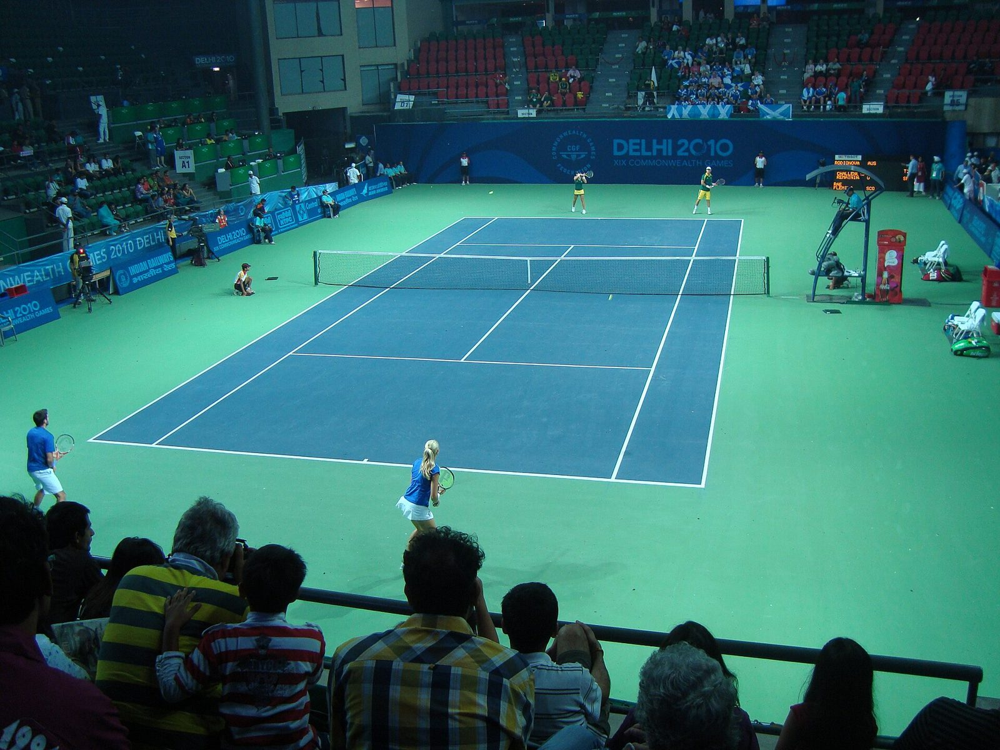
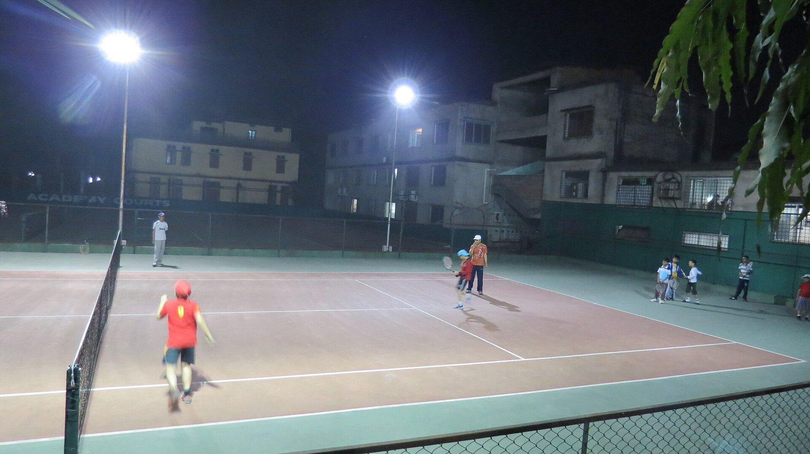

Jueves 18 de septiembre
Buenas tardes, Mateo
Skill Rating
2.340
SR
Oro
#12 de 184

6-4, 3-6, 10-7
Confirma el resultado con Diego
La Carolina, ayer
Confirmar
DR
4
victorias seguidas
+36
SR este mes
Inicio
Partidos
Ranking
Torneos
Perfil